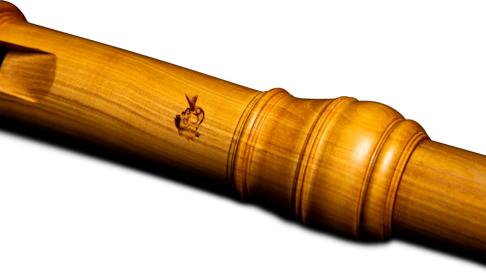

Blockflöten
Sopran und AltBarockoboen
gefertigt von Christoph Brandner
Wie ist man auf die Idee verfallen, Instrumente aus dem Barock zu kopieren?
Mitte des zwanzigsten Jahrhunderts begannen Musiker sich die Frage zu stellen, wie denn Musik zu Zeiten Bachs oder Händels getönt haben mag. Entscheidenden Einfluss übten dabei unter andern Nikolaus Harnoncourt oder Gustav Leonhardt aus, die früh anfingen, diese Musik auf Originalinstrumenten zu spielen.
Dazu brauchte man aber auch Handwerker, die fähig waren, Instrumente und im Besonderen Blasinstrumente jener Epoche nachzubauen. Denn im Gegensatz zu Streichinstrumenten waren die Holzblasinstrumente, also Flöten, Traversos, Oboen oder Fagotte aus dem Barock längst nicht mehr in Gebrauch und befanden sich, falls es gut ging, in Sammlungen oder Museen, wenn sie nicht ganz einfach verloren gegangen waren.
Man musste sich aber auch vorstellen, wie denn zu dieser Zeit gearbeitet wurde und wie Holzblasinstrumente hergestellt wurden. Dazu war es nötig, die noch erhaltenen Instrumente genau zu studieren, auszumessen und ihre Eigenheiten zu beobachten. Das 17. Jahrhundert ist auch eine Epoche, in der halbindustrielle Arbeitsprozesse aufkamen, die Zeit, in der Automatisierung durch Wasserkraft aufkam und erlaubte, an Drehbänken mit grösserer Drehgeschwindigkeit zu arbeiten. Oboen und Flöten jener Zeit zeugen von dieser Entwicklung durch ihre sorgfältige und oft minutiöse Drechselarbeit.
Allerdings zeichnet sich die Arbeit der Handwerker, die die originalen Instrumente im 17. und 18. Jahrhundert hergestellt hatten, ebenso durch zahlreiche Finessen in der Gestaltung der Bohrung, des Labiums, des Windkanals und des Blocks aus und zeugt von einer genauen Kenntnis des Einflusses dieser Details auf den Klang eines Instruments.